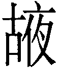
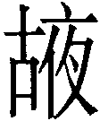

17  隨卦 澤雷隨
隨卦 澤雷隨
隨，元亨利貞，无咎。初九，官有渝，貞吉。出門交有功。六二，係小子，失丈夫。六三，係丈夫，失小子。隨有求得，利居貞。九四，隨有獲，貞凶。有孚在道，以明，何咎？九五，孚于嘉，吉。上六，拘係之，乃從維之，王用亨于西山。
【卦名】
今本：隨 帛書：隋 歸藏：規 上博簡：隓 清華簡：  海昏：
海昏：
《說文》：「隨，從也。」隨即跟隨、追隨、隨從，《老子》「前後相隨」的隨。
帛本作「隋」，《說文》：「隋，裂肉也。从肉，从隓省。」隋原本為剩餘的碎肉，在祭祀完之後埋起來送給神明。《周禮》：「既祭，則藏其隋與其服。」鄭玄：「隋，尸所祭肺脊黍稷之屬，藏之以依神。」隋也是古代的祭祀名之一。另外古文中隋也可假借為隨，或是墮落的墮，橢圓的橢，或怠惰的惰。
上博簡作「隓」，《說文》：「敗城阜曰隓，从阜聲。」隓音灰，義同隳、墮，毀壞、墮落的意思。
甲骨文或究竟是什麼字學者看法分歧，李孝定《甲骨文字集釋》收於（隓）字下。觀其形構，一邊為倒寫的人字或子字，寫成楷書為左阜右人，相當於队字，队即墜。葉玉森認為這是隊（墜），象人由阜顛下墜。董作賓認為是隨字，郭沫若釋為墮，唐蘭認為右手邊應作反人，因此是。于省吾認為是字，右邊左字增繁後變成隓。李孝定進一步認為隓與陊為同一字，《說文》：「陊，落也，从阜多聲。」
雖然學者對於這一字的見解不同，但所提出的字其音義皆大同小異，字義大致都是指墮落、墜落。由此看來，隨與隓、隊（墜）可能有共同的字源，一方面都有墜落之義，但也都各自發展出自己的各別字義，例如隨無論在先秦典籍或是現今的用法都做隨從的意思。而隊除了作墜外，像部隊、隊伍是引申為眾及行列的意思。至於隓字，段玉裁說：「小篆隓作，隷變作墮，俗作隳。用墮為崩落之義，用隳為傾壞之義，習非成是，積習難反也。」
《周易》中的隨卦除了傳統解釋為隨從、追隨之外，就卦象來說也的確有墜落的意思。上兌澤為毀折，下震為足，傷足、失足之象。甚至就卦義來說，隨卦往負面方向發展即是墮落、怠惰、毀壞，因此卦序繼之以蠱，蠱即敗壞，此即隓（隳）之字義。
隨字在古文中有時也可作「追」解釋，《集韻》：「古通追。」《離騷》「背繩墨以追曲」注：「追與隨通。」隨六三「隨有求得」及九四「隨有獲」也可解釋為追逐。高亨即持此看法：「《說文》：隨，從也。從人之後為隨，引申為逐之義。《廣雅．釋詁》：隨，逐也。隨有求得，謂追逐而有所求則得也。」
規、
馬國翰《玉函山房輯佚書》的《歸藏》中有幾個卦名自古就有爭議，例如《周易》的噬嗑與賁，隨與蠱對應的是什麼卦名，原本難有定論。隨著更多考古資料的出現，部份卦名也得到了解答。
王家台秦簡蠱卦作夜，原本《歸藏》相連的「夜」、「規」兩卦不知為《周易》何卦，黃宗炎、李過、馬國翰都有各自的說法，但都已確認為誤。秦簡既已確認「夜」就是蠱卦，那麼「規」就是隨。而清華簡的資料也得到進一步印證，其隨卦作 ，可能是覒的增繁。覒形近規，蠱卦作，從古從夜。
，可能是覒的增繁。覒形近規，蠱卦作，從古從夜。
《說文》：「規，有法度也。從夫從見。」段注：「會意，丈夫所見也。」「女智莫如婦，男知莫如夫。《字統》曰：丈夫識用，必合規矩。故規從夫。」
就卦象來說，上兌為見（《雜卦傳》「兌見巽伏」），下震長男為夫，因此卦象即為夫見。又隨卦也是長男下於少女，少女隨從於長男之象，此亦符合夫見之義。
清華簡的 應是覒字加上心的繁化，這類繁化的例子在出土竹簡中相當常見。《說文》：「覒，擇也，从見毛聲，讀若苗，莫袍切。」覒字就其音義來看與隨卦並無關聯，推測應該是與規形近之誤。
應是覒字加上心的繁化，這類繁化的例子在出土竹簡中相當常見。《說文》：「覒，擇也，从見毛聲，讀若苗，莫袍切。」覒字就其音義來看與隨卦並無關聯，推測應該是與規形近之誤。
【卦義】
隨從、跟隨，追隨。
隨卦本義為隨從、追隨於人的意思。但隨亦可假借為追、墜、惰、隳，因此亦可解釋為追逐、失足、墮落。
卦象為內震動而外兌澤，動而悅，行動而喜悅。下為震為長男，上為兌為少女，長男下於少女，少女隨長男而婚合之象，若問婚姻大吉，夫唱婦隨。但隨亦有墜落之義，上兌為毀折，下震為足，有傷足、失足之象。
《繫辭》：「服牛乘馬，引重致遠，以利天下，蓋取諸隨。」此言上古先民因為隨卦的啟發，而利用牛馬順從的天性發明了馬車和牛車，讓車能夠承載更重，行得更遠。
《序卦》說「豫必有隨，故受之以隨」，卦序上隨卦是繼豫卦而來。豫為順以動，隨為動以悅，順動而能悅人者則人隨從之。
《雜卦》說「隨无故也，蠱則飭也」。《說文》：「故，使為之也」，「飭，致堅也」。天下無事就是隨；有事，努力整飭就是蠱。隨卦是不使為之，無為自然之義；蠱則是要努力強化，整頓，努力做為。《序卦》又說：「以喜隨人者必有事，故受之以蠱。」《序卦》這段話有兩種解釋。一是討好並隨從於人一定是有事相求，所以接下來就是蠱，蠱就是有事。二是做為警惕之語，告戒君子莫落入隨之弊，若一味討好而隨從於人，那麼就成為墮落、隳敗，就會有事而腐敗成蠱。
隨卦之吉道在於「隨時」，因人所當追隨者莫大於天道自然，「隨時」即是隨順於天道，此即《彖》傳所說：「天下隨時，隨時之義大矣哉。」「時」是時間、時機，也是天道、自然的軌跡，隨時就是隨著天道之法則、自然的推移，是一種純樸而自然無為的境界。《象傳》說「君子以嚮晦入宴息」說明之。
就六爻的吉凶判斷上，爻與爻之間前後相隨的相互影響是更為重要的法則。初爻就時間來說是隨之始，無所追隨者。但就空間上來說，是隨之尾，與六二比鄰而不應，因此說「出門交有功」，意味必需脫離空間上的框架才能夠有可隨者。六二與六三為相連之象，可與六三共同承應九四，與九五雖相應但無前後相隨之義，因此六二「係小子，失丈夫」，係小子為繫六三之陰，失丈夫者失初九和九五之陽。六三則直接與九四比鄰而應，因此為「係丈夫」。
惠棟認為，隨卦三陰三陽，陰隨從於陽，因此陰爻皆稱「係」。《周易正義辨證》：「此卦三陰三陽，陰係于陽，故陰皆稱係。二係初，三係四，上係五，隨從之義，卦之所由名也。」惠棟之說，可參。
從上六「拘係之，乃從維之，王用亨于西山」來看，隨卦典故可能出自周文王（西伯）被囚於羑里的故事。《史記．周本紀》：
公季卒，子昌立，是為西伯。西伯曰文王，遵后稷、公劉之業，則古公、公季之法，篤仁，敬老，慈少。禮下賢者，日中不暇食以待士，士以此多歸之。伯夷、叔齊在孤竹，聞西伯善養老，盍往歸之。太顛、閎夭、散宜生、鬻子、辛甲大夫之徒皆往歸之。
西伯繼承祖父古公亶父遺志，遵循先祖后稷、公劉事業，也就是振興農業。后稷是周的始祖「弃」，也是中國史載最早的農業部長。《史記》：「弃為兒時…其游戲，好種樹麻、菽，麻、菽美。及為成人，遂好耕農，相地之宜，宜穀者稼穡焉，民皆法則之。帝堯聞之，舉弃為農師，天下得其利，有功。」由於弃擔任農師而讓天下因此得利，於是堯封弃於邰，號曰后稷。
同時西伯還承襲了古公亶父仁人愛民，敬老尊賢，禮賢下士的美德，因此天下賢士都歸順於他。這也引起了商紂的警覺，怕西伯的崛起將威脅到商的政權，為免後患而將西伯囚禁於羑里。西伯的謀士閎夭蒐羅了美女、駿馬，奇珍異寶，投商紂之所好而求得商紂釋放西伯。
不過二程認為，上六的「王用亨於西山」指的應該是太公（古公亶父）。
《左傳》襄公九年，穆姜即將囚禁入東宮時筮了一卦，得艮之隨，史官說是艮之隨，並以「隨其出也，君必速出」解釋這一卦。除了從卦辭「元亨利貞无咎」可推測，是從无咎而得到「隨其出也」的占斷之外，或可從西伯困於羑里的典故來看，因為文王囚於羑里的結局就是最後獲得釋放。
隨，元亨利貞，无咎。
- 彖曰：隨，剛來而下柔，動而說，隨。大亨貞，无咎，而天下隨時，隨時之義大矣哉。
- 象曰：澤中有雷，隨。君子以嚮晦入宴息。
- 《繫辭》：「服牛乘馬，引重致遠，以利天下，蓋取諸隨。」
- 《序卦》：豫必有隨，故受之以隨。以喜隨人者必有事，故受之以蠱。
- 《雜卦》：隨，无故也。蠱則飭也。
- 《易之義》：隋之卦，相而能戒也。
【今解】
隨從，德善匯聚而宜於貞定，則可免於罪咎。
隨卦的元亨利貞，是做為无咎的條件。無咎者有咎者也，善補過方得無咎。
鄭玄：震，動也。兌，説也。內動之以徳，外説之以言，則天下之人咸慕其行，而隨從之，故謂之隨也。既見隨從，能長之以善，通其嘉禮，和之以義，幹之以正則功成而有福。若无此四徳，則有凶咎焉。
王弼：為隨而令大通利貞，得於時也，得時則天下隨之矣。隨之所施，唯在於時也。時異而不隨，否之道也，故隨時之義大矣哉！
孔穎達：隨而不正，則邪僻之道，必須利貞也。无咎者，有此四德，乃无咎。以茍相從，涉於朋黨，故必須四德乃无咎也。凡卦有四德者，或其卦當時之義，即有四德，如乾、坤、屯、臨、无妄，此五卦之時，即能四德備具。其隨卦以惡相隨，則不可也。有此四德乃无咎，无此四德則有咎也。與前五卦其義稍別。
【字義】
嚮晦入宴息：入夜即安寑。一到晚上就進入放鬆休息狀態，日出而作，日入而息的意思。這是照著自然的節奏，過著樸素無為的生活。嚮通鄉或向，晦為暗、冥，引申為夜晚。嚮晦，入夜。宴，安。息，休息。宴息，安心休息。鄭玄：「晦，宴也，猶人君既夕之後入於宴寢而止息。」侯果：「坤為晦，乾之上九來入坤初，嚮晦者也。坤初升兌，兌為休息入宴者也。欲君民者，晦德息物，動悅黎庶，則萬方歸隨也。」隨是順從的意思，順從之大者莫過於順天道自然。
【筮例】
《左傳》襄公九年穆姜將入東宮問吉凶：
穆姜薨於東宮，始往而筮之，遇艮之八。史曰：「是謂艮之隨，隨其出也，君必速出。」姜曰：「亡！是於《周易》，曰：『隨，元亨利貞，無咎。元，體之長也。亨，嘉之會也。利，義之和也。貞，事之幹也。體仁足以長人，嘉德足以合禮，利物足以和義，貞固足以幹事』。然故不可誣也。是以雖隨無咎，今我婦人而與於亂，固在下位，而有不仁，不可謂元；不靖國家，不可謂亨；作而害身，不可謂利；棄位而姣，不可謂貞。有四德者，隨而無咎，我皆無之，豈隨也哉。我則取惡，能無咎乎。必死於此，弗得出矣。」
穆姜是魯成公的母親，因為行為淫亂又干預朝政，與宣伯私通又設局想廢掉成公，因此成公將她軟禁到東宮至死而終身未出。就在即將進入東宮時她筮問了一卦，得到「艮之八」。
「艮之八」是艮卦中有一個筮數是八，其餘有多個筮數非六即九，亦即所謂的多爻變的卦例。但究竟是那一爻的筮數是八不得而知，史官補充說是「艮之隨」，即筮數八者為第二爻。依照朱熹等宋儒的方法，必需以之卦不變之爻來判斷，也就是隨卦六二。
但是史官並未以隨卦六二來解卦，「隨其出也，君必速出」是直接以隨卦的「無咎」來解讀，而穆姜自己的解釋也是直接採用隨卦卦辭「隨，元亨利貞，无咎」，她說：「有四德者，隨而無咎，我皆無之，豈隨也哉。我則取惡，能無咎乎。必死於此，弗得出矣。」穆姜認為，得隨卦若具備元亨利貞四德則能免於罪咎，而得以獲得釋放，我則不具備四種美德，作惡多端，怎麼可能沒有罪咎呢？因此必定死在東宮裡，終身無法出來。朱熹評說：「四德雖非本義，然其下云云，深得占法之意。」
杜預注說：「雜用連山、歸藏、周易。二易皆以七八為占，故言遇艮之八。」這裡說的「二易」指的是連山和歸藏，杜預說連山和歸藏以七八為占，因此認為這裡使用了這二易。這完全是武斷的臆測，史官與穆姜所談全部都是《周易》，周易以六九為占，六九很多時，則不用六九改用全卦卦象，因此此卦以隨卦為占。六九很多時則會用「八」來表達這種情況，像董因筮重耳返晉得「泰之八」、重耳親筮得晉國得「貞屯悔豫皆八」。
初九，官有渝，貞吉，出門交有功。
象曰：官有渝，從正吉也；出門交有功，不失也。
【今解】
官員有變動，貞定則吉。出門與人相交，會有功。
此言官員有變動，當以不變應萬變，貞定則吉，不變者就是守住自己的立場。反之，若到處鑽營，試圖奉承可能的新長官，那麼可能弄巧成拙。
出門交有功，出門與人結交，寓指不在體制內去運作，走出框架，到外廣結善緣，則可以有收獲。
初九為震之主爻，震為變動，故曰「有渝」，渝即變。動則下爻成坤，全卦成萃，萃為聚，故曰「出門交有功」。
鄭玄：「震為大塗，又為日門，當春分，陰陽之所交也。是臣出君門，與四方賢人交，有成功之象也。昔舜慎徽五典，五典克從，納于百揆，百揆時序，賓于四門，四門穆穆，是其義也。」
【字義】
官有渝，貞吉：官為一件事情的主管，或者是指官員。有渝，有變。官有渝，為官場多變，或是官員命令有變。貞吉者，以不變應萬變，不變的是守正、守靜、貞定，不違背自己的立場。隨道之吉在於隨時而變，順其自然，官有渝原本會讓人無所適從，但只要守靜以待，時間自會解決一切問題。「官有渝」帛書本作「官或諭」，則意思為官員（主管）可能會有交待，有指示。高亨認為，官有渝為館舍毀壞：「《說文》：館舍也。官之初義正為舍，故从宀在 上，則官即古館字明矣。…周易此官字正用其初義，蜀才作館，用後造字。渝墮敗也（說見訟卦）。官有渝謂館舍有毀圮也。」孔穎達以人心之主宰解釋「官」，後儒多從之，並以大公無私來詮釋整爻。孔穎達：「心所主謂之官。渝，變也。初九無應，無所偏係，可隨則隨，是所執之志能渝變也。惟正是從，故貞吉也。所隨不以私，見善則往隨之，以此出門，交獲其功。」
六二，係小子，失丈夫。
象曰：係小子，弗兼與也。
【今解】
綁住了小輩，卻跑走了尊貴的丈夫。
比喻無法兩面兼顧，顧此失彼，所得者小，所失者大。《象》曰：「係小子，弗兼與也。」無法兩面兼得之義。
六二與九五之君相應，但在「隨」卦裡爻與爻之間的關係卻以前後相隨為優先。六二雖然當位，但以柔乘剛，為逆為凶，與六三為同類相牽，因此為係小子（陰為小），而六二原本應當相應於九五，追隨於九五之君，但隨卦的情勢只讓它與六三同類相牽而失去了與九五的關係，所以說「失丈夫」。又六二動則下卦成兌，兌為損失，故曰「失丈夫」。
易象中若陰陽比鄰，則有順逆之象。若是同類比鄰，如陰與陰，陽與陽，則為牽連之象。如小畜九二曰「牽復」，泰初九與否初六「拔茅茹，以其彙」描繪拔茅草時根根相連而起，也是取三陽爻及三陰爻相連之象。
【字義】
係小子，失丈夫：言顧此失彼。係，同繫，相對於「失」，繫有「得」的意思。小子，小輩，輩份或身份較卑微者。丈夫，《子夏易傳》作「丈人」，為輩份或身份較尊貴者。「係小子，失丈夫」字面意思是綁住了小輩，但卻讓丈夫給逃走了。引申為無法兩面兼顧，所失者大，所得者小。後來許多注解則將小子、丈夫理解為小人與大人（君子），係則理解為隨，跟隨，並解釋為追隨小人，捨棄君子。隨卦典故出自文王囚於羑里，因此爻辭中有拘繫及釋放人犯的情節。又隨有追逐之意，依六爻爻辭來看，「係小子失丈夫」及「係丈夫失小子」也有可能是講追逐拘繫俘虜或人犯的情節。
六三，係丈夫，失小子。隨有求得，利居貞。
象曰：係丈夫，志舍下也。
【今解】
綁住了尊貴的丈夫，跑走了小輩。追逐求取而有所獲得，利於處正。
追到正確的方向而有所獲得，利於守正不變動。比喻雖然兩面無法兼得，但選擇正確的一邊，收獲豐盛，而抓到了丈夫。
隨卦爻與爻之間以前後相隨的關係為優先，六三緊隨六二之後，與六二同為陰並不相應，而與外卦的上六也同樣不相應，此為「失小子」。緊隨六三之後的為九四，六三承載九四為順為吉，此為係丈夫。象曰：「係丈夫，志舍下也。」因為六三捨棄與下面陰爻而不與其攜手相連，因此能夠得到上面之陽爻。
六三動，下卦由震成離，互體由巽變乾。離為擒獲之義，故「隨有求得」。巽為繩，乾為丈夫，因此係丈夫。
【字義】
係丈夫，失小子：原意為綁住了丈夫，卻跑走了小子。或有易學家解釋為追隨大人（君子），放棄了小人。詳見「係小子，失丈夫」的解釋。
隨有求得：此處的隨應取「追逐」之義，追逐而有獲得。上海博物館戰國楚竹書作「隓求又得」，轉譯為今文就是「隨求有得」，隨即追，隨求有得即追求有得。
利居貞：傳統解釋作宜於處正。居為處，貞為正。另一解釋為有利於關於居住之事的卜問，凡問居住之事為吉。貞為卜問的意思。《說文》：「貞，卜問也。」
九四，隨有獲，貞凶。有孚在道，以明，何咎？
象曰：隨有獲，其義凶也；有孚在道，明功也。
【今解】
追逐將有斬獲，貞定則凶。很顯然的有俘虜在路上，怎會有罪咎？
意指當追逐，追逐則會有斬獲，不會有罪咎。反之，若不追逐，貞定而原地不動則凶。隨為追逐的意思，孚為俘虜。
或者解釋為隨從有所收獲，堅定為凶。有誠信，走的是大道，若能明哲不居功，有何罪咎？
君子有人追隨、獲得人心，若堅定而行將因此遭凶。這是因為九四處近臣之位，下得民心則上得君王之猜忌而引來殺機。但若能夠明哲保身，歸功於上，將可免於罪咎。「有孚在道，以明」乃是告戒之辭，依此而行乃可免於罪咎。
【字義】
隨有獲：隨為追逐，獲為捕獲俘虜。隨有獲，追逐而捕獲俘虜。另也可解釋為隨從有所收獲。隨有獲言兩陰爻隨從於九四，九四有隨從之收獲，得到追隨者。九四處近臣之位，下面有兩個陰爻承載，為眾人隨從而得民之象。但四也是近君多憂多凶之位，九四為陽不能承載九五，與九五之君不相應。上與君不相得，又下有自己的追隨者，因此被九五之君所猜忌，所以「貞凶」。九四爻居靜不動則上體為兌為毀折，此為貞凶。但若動則上體成坎，為坎陷為入獄。
有孚在道以明：傳統解釋，有孚為有誠信。在道，遵循大道，走的是正道。以明，用明，明為聰明、智慧之義，以明，運用聰明、智慧，引申為明哲保身。言君子以誠信之心應對，行事合於正道，以此明哲則可以保身而不會有罪咎。另一解釋以孚為俘，有孚在道，有俘虜在大馬路上。孚的字源有二，一是上從爪下從一圓像卵，為孵的本字，古人認為卵孵破殼準時而可信，後引申為信。二是上從爫，下從子，手抓小子，為俘的本字。隨卦卦義亦可解釋為追逐之義，而觀六爻爻辭，所追逐者顯然是俘虜，因此有「係小子失丈夫」、「係丈夫失小子」及「拘係之」等情節的描繪。
九五，孚于嘉，吉。
象曰：孚于嘉吉，位正中也。
【今解】
信於美善則吉。
象曰：「孚于嘉吉，位正中也。」此言所謂信於善則吉，是因為九五陽剛中正當位，所應六二陰柔亦當位。
另也可解釋為有俘虜於嘉禮，吉。
【字義】
孚于嘉：信於美善，所相信者為美為善。朱熹：「陽剛中正，下應中正，是信于善也。」嘉為美善，信於美善，意謂九五與六二相應，兩者皆中正而當位，嘉善之象。孚也可作俘，俘虜的意思。嘉為嘉禮，《周禮》「以嘉禮親萬民」。嘉禮主要是與「飲食男女」相關的禮儀，具體來說包括飲食、婚冠、賓射、饗燕、脤膰、賀慶。嘉禮的「嘉」取其親善之義，凡此六禮，都有與民親善的意思。
上六，拘係之，乃從維之，王用亨于西山。
象曰：拘係之，上窮也。
【今解】
將他抓來囚禁，然後再將他釋放。大王在西山舉行享祀。
此爻典故講的可能是西伯（周文王）被商紂拘禁再釋放的故事。西伯囚於羑里，在被釋放之後舉行饗宴以感謝各方幫助，或舉行祭祀以謝神明。亨通享，饗宴或祭祀的意思。
【字義】
拘係之，乃從維之：這段爻辭歷代注解觀點相當岐異，但絕大多數都把「拘係」解釋為拘執，就是把人拘留並係綁，而維解釋作拘係或維係，《詩．白駒》：「縶之維之。」毛傳：「維，繫也。」維繫人心，經營人心是較好的解釋。「從」亦可解釋作「縱」，為釋放的意思，指紂王釋放了西伯。高亨則認為，「維」字實為「遺」，「乃從維之」就是「乃縱遺之」，也就是釋放的意思。另帛本作「枸系之，乃從之」，上博簡則作「係而敂之，從乃之」，學者多以和為纗之假借，纗音義與維同。但與也可能借為巂，「巂」音義同「規」，《禮記．曲禮》「立視五巂」注：「巂猶規也，謂輪轉之度。」這或許可說明為何《歸藏》隨卦作「規」，規為規範的意思，拘係之後從而規範之，或者釋放之後從而規範之。但「巂」或許假借為「歸」，「乃縱歸之」就是將其釋放回去。
王用亨于西山：文王在西山饗宴賓客，或祭祀謝天。亨通享。享為享祀、祭祀。也可通饗，饗宴的意思。王，就典故來說指周文王，但用於占筮中亦可泛指周王。升卦六四作「王用亨于岐山」，西山亦即岐山，也是文王祖父古公亶父建立周之重要基業的地方，因此周王以此為祭祀天地山川之處。朱熹：「亨，亦當作祭享之享，自周而言，岐山在西，凡筮祭山川者得之。」帛本作「王用芳于西山」，帛書中「享」皆作「芳」，與「元亨」的亨有別。上博簡的「亨」作「卿」，而此句作「王用亯于西山」，亯即享。「用享」在《周易》中還有多例，如大有九三「公用亨于天子」《左傳》引作「公用享於天子」，益六二「王用享于帝」、損「二簋可用享」、困九二「利用享祀」。古文中原本亨與享是可共用的，但五經中兩字用法仍有分別。亨作烹飪、熟食的意思，《周易》則另作嘉會（美善的聚會）。享字在古經典中多解釋作享祀，如《詩經》中常有「以享以祀」。但享古文中也通饗、鄉、卿、亯，其原義都是聚餐、饗宴的意思，引申而成敬獻食物給神明亦為享（亯），即享祀。《左傳》僖公二十五年晉文公筮問是否該出兵救周襄王，得大有之睽，引大有九三爻辭：「吉，遇公用享于天子之卦也。戰克而王饗，吉孰大焉？」此即以享為饗，饗宴的意思。這裡的「王」除了可能指周文王，另有一看法認為應是文王祖父古公亶父，如程頤與朱震。程頤：「昔者太王用此道，亨王業于西山。太王避狄之難，去豳來岐，豳人老稚扶攜以隨之如歸市，蓋其人心之隨，固結如此，用此故能亨盛其王業於西山。西山，岐山也。周之王業，蓋興於此。」朱震：「昔周之太王用此爻以亨於西山，杖策而去，隨之者如歸市，非得民之隨，豈能使已窮而更隨？」
【彖傳注】
隨，剛來而下柔，動而說，隨。大亨貞，无咎，而天下隨時，隨時之義大矣哉。
剛來而下柔：以初九主爻解釋隨卦。隨卦是否卦卦變而來，否卦上九至初，初六至上，而成隨。剛來而下柔，指否卦上九下降成隨卦初九，下於六二與六三兩個柔爻。王弼注解以震為剛，兌為柔，震下兌上為剛來下柔：「震剛而兌柔也，以剛下柔，動而之說，乃得隨也。」孔穎達從之：「震處兌下，是剛來下柔，震動而兌說。」觀整本《彖傳》，應是以陽爻為剛，陰爻為柔，而不是以陽卦為剛，陰卦為柔。巽「柔皆順乎剛」及兌「剛中而柔外」可為證，因兩卦上下體都無陽剛之卦，剛柔只能以陽爻與陰爻來解釋。來知德除了以震為剛、巽為柔，另還以錯綜言剛來而下柔，隨蠱同體，震乃蠱卦而來，蠱是隨卦而來，反對兩卦相生，互為父母，成雞生蛋蛋生雞的循環，六十四卦與乾坤父母無所關聯。且如巽兌的彖傳例可知，以錯綜及八卦卦象無法解釋「柔皆順乎剛」、「剛中而柔外」，持以上兩論的易學家在巽兌兩卦都不得不轉向改為以剛為陽，柔為陰。漢易學家則多以卦變解釋剛來下柔，程頤與朱熹從之。如虞翻：「否乾上來之坤初，故剛來而下柔。」蜀才：「此本否卦。剛自上來居初，柔自初而升上，則內動而外悅，是動而悅隨也。相隨而大亨无咎。」
動而說，隨：以上下二體卦義解釋隨卦卦義。
大亨貞，无咎：經文「元亨利貞」，但《彖傳》只解釋「大亨貞」，缺一利字，與屯卦同。此或有訛誤。《釋文》：「大亨貞，本又作大亨利貞。」
而天下隨時：朱熹依王肅認為「天下隨時」當作「天下隨之」。《本義》：「王肅本時作之，今當從之。釋卦辭，言能如是，則天下之所從也。」此擴大詮釋隨之卦義，能大亨貞而无咎，則天下將隨從之。
隨時之義大矣哉：朱熹：「王肅本時字在之字下，今當從之。」依朱熹，此句當作「隨之時義大矣哉」。
「閎夭之徒往歸之」應於「紂囚西伯於羑里」之前
Jack 站長，您好！
按司馬遷《史記 ‧ 周本紀》：「西伯曰文王，……太顛、閎夭、散宜生、鬻子、辛甲大夫之徒皆往歸之。此後，崇侯虎才因此譖西伯於殷紂曰：「西伯積善累德，諸侯皆向之，將不利於帝。」帝紂便聽從了崇侯虎之讒言，乃囚西伯於羑里。而後才有「閎夭之徒患之。乃求有莘氏美女，驪戎之文馬，有熊九駟，他奇怪物，因殷嬖臣費仲而獻之紂。」
晚輩向站長問好！
感謝指正
會再找時間好好研究再改寫。
“六二，係小子，失丈夫。”之小子與丈夫各謂誰？
“六二，係小子，失丈夫。”之小子與丈夫各謂誰？
意見比較多，分別羅列如下：
第一種意見認為：小子指初九，丈夫指九五。從此說的最多，主要有：
1、周易正義曰：小子謂初九也，丈夫謂九五也。初九處卑，故稱小子。五居尊位，故稱丈夫。六二既是陰柔，不能獨立所處，必近係屬初九，故雲「係小子」。既屬初九，則不得往應於五，故雲「失丈夫」也。
2、周易本義曰：初陽在下而近，五陽正應而遠，二陰柔不能自守以須正應，故其象如此，凶吝可知，不假言矣。
3、伊川易傳曰：二應五而比初，隨先於近，柔不能固守，故為之戒雲：若係小子，則失丈夫也。初陽在下，小子也；五正應在上，丈夫也。二若志係於初，則失九五之正應，是失丈夫也。係小子而失丈夫，舍正應而從不正，其咎大矣。二有中正之德，非必至如是也，在隨之時，當為之戒也。
4、陳夢雷《周易淺述》：初陽在下而近，以在下有小子象。五陽正應而遠，以君位有丈夫象。二與五正應，宜得所隨矣。然當隨之時，以陰爻陰位爲過於柔。不能自守以待正應，而近係于初，有係小子失丈夫之象。人隨我爲隨，我隨人爲係。曰失，惜之也。
第二種意見認為：小子指六三，丈夫指初九。從此說的有：
1、來知德《周易集註》：中爻巽為繩，係之象也。陰爻稱小子，陽爻稱丈夫，陽大陰小之意。小子者三也，丈夫者初也。六二中正，當隨之時，義當隨乎其三，然三不正，初得正，故有係小子失丈夫之象，不言凶咎者，二中正所隨之時，不能兼與也。
2、俞琰《周易集說》：小子指六三之柔爻，丈夫指初九之剛爻。陰性善係，弗能兼與，係上則失下，故曰係小子失丈夫。
第三種意見認為：小子指九四，丈夫指初九。從此說的有：
1、朱震《漢上易傳》：四艮為少男，有乾父坤母，小子也；初震為長男，有巽婦，夫也。隨利於正，初九正也，九四不正也，二與四同功，以情言之，柔必隨剛，陰必隨陽，初九、九四皆陽剛也，其能兼與之乎？四雖在上，不正也，初雖在己之下，正也。六二係情於四，比初不專，雖與之相比，而情不親，雖有中正之德，而所隨非其人，其失在於不能權輕重也。故曰係小子，失丈夫，弗兼與也。臨事擇義於六二、六三見之。
2、尚秉和承朱震說，認為：初至四正覆皆艮。亦皆震。震為夫。艮為小子。六二近初陽。故係初失四。曰係小子失丈夫。三承四陽。故係四失初。曰係丈夫失小子。至其所以失之故。仍陰遇陰則塞之定例。二陰為三陰所阻。故失四。三陰為二陰所隔。故失初。下震亦艮。上艮亦震。體同也。不分也。卦象來往反復。卦辭亦來往反復。
另外，尚還順便批駁了一番第四種意見，即虞翻的說法。“而虞翻以五為小子。謂兌為少。故曰小子。夫兌為少女。焉得為小子。艮為小子。見於易。見於孟氏逸象。見於易林者尤多。未有以兌為小子者也。虞不知覆震為丈夫。謂四為丈夫。而以大過九二之老夫為例。豈知大過九二之老夫。乃謂對象震。非謂本象巽。虞已誤解。而復持其誤解以解隨。不愈誤哉。”
第四種，小子是九四，丈夫為九五。
從此說的相對較少，主要為虞翻。他認為：應在巽。巽爲繩，故稱係。小子謂五，兌爲少，故曰小子。丈夫謂四，體大過老夫，故稱丈夫。承四隔三，故失丈夫。三至上，有大過象，故與老婦、士夫同義。體鹹象，夫死大過，故每有欲嫁之義也。
站長認為：“六二與六三為相連之象，可與六三共同承應九四，但與相鄰的初九比鄰不應，與九五雖相應但無前後相隨之關聯，因此六二「係小子，失丈夫」，係小子為繫六三之陰，失丈夫者失初九和九五之陽。”其後的闡述為“六二與九五之君相應，但在「隨」卦裡爻與爻之間的關係卻以前後相隨為優先。六二雖然當位，但以柔乘剛，為逆為凶，與六三為同類相牽，因此為係小子（陰為小），而六二原本應當相應於九五，追隨於九五之君，但隨卦的情勢只讓它與六三同類相牽而失去了與九五的關係，所以說「失丈夫」。又六二動則下卦成兌，兌為損失，故曰「失丈夫」。”可能比較傾向於第一種意見，但也沒有否定第二種意見，屬於兼收並蓄。
個人比較贊同站長說的，“就六爻的吉凶判斷上，爻與爻之間前後相隨的相互影響是更為重要的法則。”因此，在隨卦這一卦裡，就六二而言，初九與六三屬於前後相隨的兩爻，更應該符合丈夫與小子的角色定位。所以認為可能第二種意見還是要相對更合理一些。